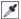

ыстрые ссылки на процедуры, описанные на этой странице:
• |
• |
• |
Чтобы удалить ненужные области и улучшить композицию изображения, его можно обрезать. Можно выбрать прямоугольную область, которую нужно сохранить, и удалить остальную часть изображения. В результате размер файла изображения уменьшается без изменения разрешения.
Инструмент обрезки позволяет удалять ненужные области изображений.
Изображение можно также легко обрезать по окружающей его одноцветной рамке, например по белому полю вокруг старой фотографии.
В программе Corel PHOTO-PAINT можно также выполнять обрезку вокруг редактируемой области маски, однако в любом случае окончательное изображение будет иметь прямоугольную форму. Для получения дополнительных сведений о масках см. раздел Работа с масками.
Можно изменить размер изображения и без удаления или добавления областей изображения путем изменения размеров изображения и разрешения. Для получения дополнительных сведений см. раздел Изменение размеров изображения, разрешения и размера бумаги.
| Обрезка изображения |
1. |
Выберите инструмент Обрезка |
2. |
Перетащите прямоугольник, чтобы выбрать область изображения.
|
3. |
Дважды щелкните внутри области обрезки.
|
Чтобы лучше рассмотреть обрезаемое изображение, можно скрыть
наложение обрезки. Выберите Изображение |
Чтобы обрезать область изображения, можно также выбрать
инструмент Обрезка и ввести значения в поля размера и
расположения на панели свойств.
|
| Обрезка изображения по цвету края |
1. |
Выберите Изображение |
2. |
Выберите один из следующих параметров.
|
• |
Фон: обрезка цвета, указанного для образца цвета фона |
• |
Передний план: обрезка цвета, указанного для образца Цвет переднего
плана |
• |
Другой: обрезка цвета, выбранного с помощью меню выбора цвета или
инструмента Пипетка .
|
3. |
В области Допуск выберите один из следующих параметров.
|
• |
• |
Режим HSB: определение отклонения цвета по разнице между
уровнями оттенка, насыщенности и яркости соседних пикселей.
|
4. |
С помощью регулятора Допуск задайте отклонение для цвета, по
которому необходимо выполнить обрезку.
|
Для успешного удаления цвета края, возможно, придется испробовать несколько положений регулятора Допуск. |
| Обрезка по редактируемой области маски |
1. |
Определите редактируемую область изображения.
|
2. |
Выберите Изображение |
Для получения дополнительных сведений об определении
редактируемых областей см. раздел Работа с масками.
|
Copyright 2012 Corel Corporation. Все права защищены.